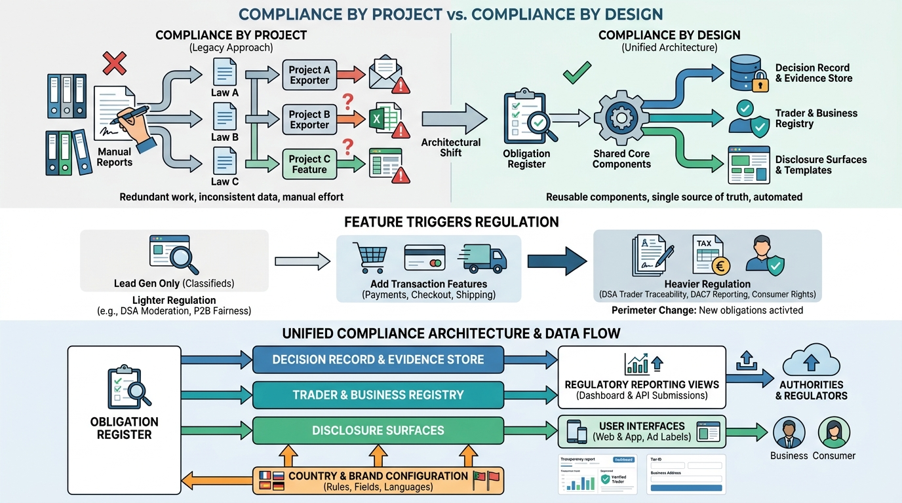

Part V — TRUST: Keeping the Marketplace Safe
Rules of the Marketplace: DSA, DAC7 and Vertical Regulation

Image generated by Google Gemini (gemini-3-pro-image-preview)
Part V — TRUST: Keeping the Marketplace Safe

Image generated by Google Gemini (gemini-3-pro-image-preview)